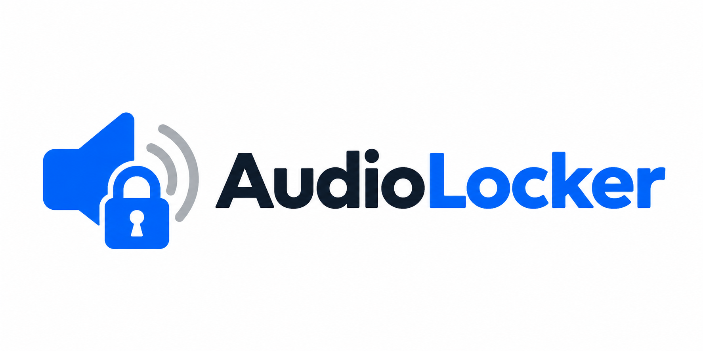
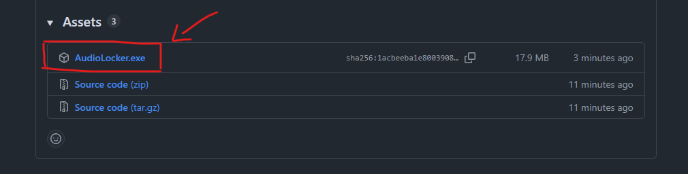
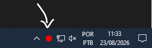
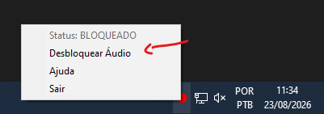
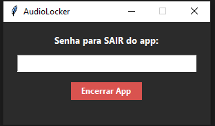

Programa simples para limitar o volume máximo do computador com senha
Baixar AudioLocker no GitHubO que ele faz?
O AudioLocker impede que o volume do som ultrapasse o nível definido por você. Ele roda escondido no canto da tela e exige senha para alterar as configurações ou fechar o programa. Ideal para computadores usados por várias pessoas.
Como Usar Passo a Passo
-
Baixar o programa: Clique no botão de download acima, acesse a versão mais recente no GitHub e clique em
AudioLocker.exena área Assets:
-
Abrir o programa: O AudioLocker não precisa de instalação. Basta dar dois cliques no arquivo
AudioLocker.exebaixado. -
Configuração inicial: Na primeira vez que abrir, crie uma Senha, escolha o Volume Máximo (%) permitido e clique em salvar:

-
Uso no dia a dia: O programa fica rodando ao lado do relógio do Windows. Quando o ícone estiver vermelho, o limite de som está ativo:

-
Desbloquear temporariamente: Para aumentar o volume acima do limite, clique com o botão direito no ícone do programa perto do relógio, selecione Desbloquear Áudio e digite sua senha:

-
Fechar o programa: Clique com o botão direito no ícone perto do relógio, selecione Sair e digite a sua senha:
